컴퓨터활용능력-2급 (2006-07-23 기출문제)
1과목: 컴퓨터 일반
1. 다음 중 주소지정 방식에 대한 설명으로 옳지 않은 것은?
- 직접주소는 색인 레지스터, 베이스 레지스터를 사용하지 않고 주소 필드에 있는 실제 데이터가 기억된 메모리 내의 주소가 되는 방식이다.
- 간접주소는 주소 필드에 있는 값이 데이터가 있는 번지를 직접 지정하지 않고 번지를 기억하고 있는 장소 또는 레지스터를 지정하는 방식이다.
- 계산에 의한 주소는 실제 데이터가 들어갈 메모리의 위치를 지정할 때 명령어의 주소 부분에 있는 값과 특정 레지스터에 기억된 값을 더해서 지정하는 방식이다.
- 계산에 의한 주소 방식에는 직접주소 지정 방식과 간접 주소 지정 방식이 있다.
(정답률: 37%)
2. 다음 중 컴퓨터를 처리 능력에 따라 분류할 때, 분류 범주에 속하지 않는 것은?
- 미니 컴퓨터(Mini Computer)
- 범용 컴퓨터(General Computer)
- 마이크로 컴퓨터(Micro Computer)
- 슈퍼 컴퓨터(Super Computer)
(정답률: 43%)

3. 다음 중 주기억장치에 대한 설명으로 가장 옳지 않은 것은?
- 주기억장치는 비휘발성 메모리로 대용량의 데이터와 프로그램을 영구적으로 보관하는데 사용된다.
- ROM에는 주로 기본 입/출력 시스템(BIOS), 글자 폰트, 자가 진단 프로그램(POST) 등이 저장되어있다.
- 주기억장치는 CPU가 직접 접근하여 데이터를 처리할 수 있는 기억장치로 현재 수행되는 프로그램과 데이터를 저장하고 있다.
- RAM(Random Access Memory)은 자유롭게 읽기/쓰기가 가능한 기억장치이다.
(정답률: 37%)
4. FAT(File Allocation Table)는 파일 할당 테이블로서 디스크에 존재하는 파일의 정보가 저장되어 있는 섹터들을 찾아 볼 수 있도록 정보를 저장하는 특수영역이다. 다음 중 FAT32에 대한 장점으로 옳지 않은 것은?
- 하드디스크의 공간 낭비를 줄일 수 있다.
- 시스템 안정성이 향상된다.
- 시스템 리소스를 최소화할 수 있다.
- 하드디스크의 성능은 최적화되나 시스템의 전체 성능은 느려진다.
(정답률: 68%)
5. 다음 중 NCSC(미국 국립 컴퓨터보안센터)에서 규정한 보안 등급 순서를 높은 수준부터 낮은 수준 순으로 올바르게 나열한 것은?
- A1 - B1 - B2 - B3 - C1 - C2 - D1
- D1 - C2 - C1 - B3 - B2 - B1 - A1
- A1 - B3 - B2 - B1 - C2 - C1 - D1
- D1 - C1 - C2 - B1 - B2 - B3 - A1
(정답률: 36%)
6. 1 기가 바이트(Giga Byte)는 정확히 몇 바이트(Byte)인가?
- 1024 Bytes
- 1024 × 1024 Bytes
- 1024 × 1024 × 1024 Bytes
- 1024 × 1024 × 1024 × 1024 Bytes
(정답률: 76%)
7. 다음 기억 장치 중 멀티미디어 데이터의 증가에 따라 최근에 많이 사용되는 대용량 저장매체로 옳지 않은 것은?
- CD-RW
- 하드디스크
- DVD
- 릴 테이프
(정답률: 49%)
8. 다음 중 한글 Windows XP에서 [디스플레이 등록정보] 창의 각 탭 메뉴에 대한 설명으로 옳지 않은 것은?
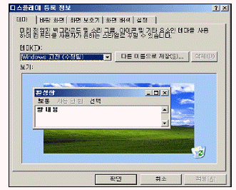
- [화면 보호기] : 시스템을 켜 둔 체 지정한 시간동안 마우스나 키보드를 사용하지 않으면 모니터를 보호하는 화면 보호기를 작동할지 여부를 설정한다.
- [설정] : 창과 그 구성 요소의 색상, 아이콘의 크기 및 간격, 기본 글꼴의 종류 등을 설정할 수 있다.
- [화면 배색] : 바탕 화면이나 창, 대화상자 등의 아이콘의 크기, 색, 간격 등을 변경할 수 있다.
- [바탕 화면] : 바탕 화면에서 사용할 배경 무늬나 배경 그림 등을 지정할 수 있다.
(정답률: 46%)
9. 다음 중 정보통신망의 네트워크 관련 장비에 대한 설명으로 옳지 않은 것은?
- 허브(Hub) : 네트워크를 구성할 때 한꺼번에 여러 대의 컴퓨터를 연결하는 장치로, 각 회선을 통합적으로 관리하는 장치
- 라우터(Router) : LAN을 연결해 주는 장치로서 정보에 담긴 수신처 주소를 읽고 가장 적절한 통신통로를 이용하여 다른 통신망으로 전송하는 장치
- MAN(Metropolitan Area Network) : LAN의 기능을 포함하면서 WAN보다 넓은 범위의 지역에서 고속으로 전송할 수 있는 통신망
- 리피터(Repeater) : 디지털 방식의 통신선로에서 전송신호를 재생하여 전달하는 전자통신장치
(정답률: 45%)
10. 한글 Windows XP에서 바탕 화면에 표시된 바로 가기 아이콘에 밑줄이 생기고, 마치 하이퍼텍스트처럼 한 번 클릭해도 해당 응용프로그램이 실행되도록 설정하려고 한다. [시작]-[설정] 메뉴를 선택한 다음 수행하여야 할 작업으로 옳은 것은?
- [제어판]-[폴더옵션]을 누른 다음 일반 탭에서 한번 클릭해서 [열기]를 선택한다.
- [제어판]-[인터넷옵션] 항목을 더블 클릭한 후 일반 탭에서 웹 형식을 클릭한다.
- [제어판]-[액티브 데스크톱]-[웹 페이지 형식으로 보기]를 클릭한다.
- 바탕 화면에서 마우스 오른쪽 클릭하여 [속성]을 선택한 후 [웹] 탭에서 ‘액티브데스크톱을 웹 페이지 형식으로 보기’로 설정한다.
(정답률: 39%)
11. 한글 Windows의 [시작] 메뉴에 프로그램을 등록하기 위한 작업 순서로 옳은 것은?
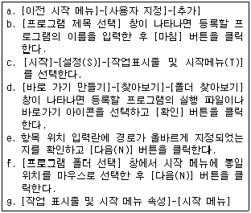
- c→g→a→d→e→f→b
- c→f→g→a→d→e→b
- c→d→e→g→a→f→b
- c→f→d→e→g→a→b
(정답률: 38%)
12. 인터넷 상에서 비디오 데이터를 전송하려고 한다. 이때 사용되는 비디오 데이터 포맷으로 옳지 않은 것은?
- AVI
- MOV
- JPEG
- MPEG
(정답률: 66%)
13. 다음 중 압축에 관한 설명으로 가장 적절하지 않은 것은?
- 압축 대상에 따라 파일 압축, 디스크 압축, 실행 파일로 압축 등이 있다.
- 파일을 압축하는 목적은 저장 공간의 절약과 통신 속도의 향상이다.
- 파일 압축 프로그램에는 ARJ, PKZIP, RAR, LHA 등이 있다.
- 압축 파일을 재 압축하는 방식으로 파일의 크기를 계속 줄일 수 있다.
(정답률: 72%)
14. 한글 Windows 작업 표시줄의 특징으로 옳지 않은 것은?
- 현재 실행되고 있는 프로그램을 표시하고, 프로그램을 빠르게 실행할 수 있는 빠른 실행 도구 모음이 있는 곳이다.
- ‘작업 표시줄 잠금’이 지정된 상태에서는 작업 표시줄의 크기나 위치 등을 변경할 수 없다.
- 작업 표시줄은 위치를 변경하거나, 크기를 화면의 1/4 까지만 늘릴 수 있다.
- [시작] 단추, 빠른 실행 도구 모음, 실행 중인 프로그램이 표시되는 부분, 알림 영역으로 구성된다.
(정답률: 65%)
15. 다음 중 전자우편에 대한 설명으로 옳지 않은 것은?
- 인터넷을 통하여 사용자끼리 서로 편지를 주고받는 서비스
- 편지를 받을 때는 SMTP 서버, 편지를 보낼 때는 POP 서버를 이용한다.
- 전자우편 주소는 ‘사용자ID@호스트주소’의 형식으로 이루어진다.
- MIME은 웹 브라우저가 지원하지 않는 각종 멀티미디어 파일의 내용을 확인하고 실행시켜 주는 프로토콜이다.
(정답률: 57%)
16. 다음 중 인터넷 주소에 대한 설명으로 옳지 않은 것은?
- Domain Name을 컴퓨터가 이해할 수 있는 IP주소로 변환해 주는 시스템을 DNS라고 하며 공백은 사용할 수 없다.
- Domain Name은 왼쪽에서 오른쪽으로 갈수록 상위 Domain을 의미한다.
- Domain Name은 문자로 구성되어 있어서 숫자로 구성된 IP주소보다 인터넷 주소를 이해하거나 기억하기 쉽다.
- 전 세계 모든 국가에서 사용하는 도메인 형식은 모두 동일하다.
(정답률: 54%)
17. 다음 중 데이터 교환 방식으로 옳지 않은 것은?
- 메시지 교환
- 기계 교환
- 회선 교환
- 패킷 교환
(정답률: 55%)
18. 한글 Windows XP에서 그래픽 카드를 교체할 경우에 대한 설명으로 옳지 않은 것은?
- Windows용 드라이버가 필요하다.
- 모든 교체 작업이 완료되면 시스템을 다시 시작해야 한다.
- 바탕화면의 빈곳에서 마우스 우측버튼을 눌러 나타나는 바로 가기 메뉴에서 [속성]을 클릭한 다음 [디스플레이 등록 정보]창의 [설정]탭에서 [고급] 버튼을 클릭하여 설정 작업을 진행한다.
- [시작]-[프로그램]-[보조프로그램]-[시스템도구]에서 ‘하드 웨어 추가’를 선택한 다음 추가 마법사를 통하여 설정 작업을 진행한다.
(정답률: 37%)
19. 다음 중 컴퓨터의 CPU에서 덧셈, 뺄셈, 곱셈, 나눗셈 기능을 수행하는 장치로 옳은 것은?
- 레지스터
- 산술논리장치(ALU)
- 제어장치(CU)
- 바이오스(BIOS) 장치
(정답률: 78%)
20. 다음 중 한글 Windows XP의 [제어판]-[시스템]-[하드웨어]-[장치관리자]에 대한 설명으로 옳지 않은 것은?
- 문제가 있거나 불필요한 하드웨어 장치는 제거할 수 있다.
- 각 장치의 등록 정보를 이용하여 IRQ, DMA, I/O Address 등을 확인하고 변경한다.
- 컴퓨터에서 메모리와 가상 메모리의 성능 상태를 확인하고 설정 값을 변경한다.
- 원안에 노란색! 표시가 된 장치는 정상적으로 동작하지 않는 장치를 나타낸다.
(정답률: 42%)
2과목: 스프레드시트 일반
21. 아래의 원형 차트를 구성하는 요소에 포함되지 않는 것은?
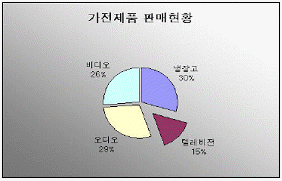
- 항목 축
- 차트 옵션
- 그림 영역
- 계열
(정답률: 51%)
22. 시트를 그룹화한 상태에서 [A1]셀에 ‘스프레드시트’ 단어를 입력하였을 때 나타나는 결과로 옳은 것은?
- 첫 번째 시트에만 입력되어 나타난다.
- 선택한 시트의 [A1]셀에 모두 입력되어 나타난다.
- 오류가 나타난다.
- 마지막 시트에만 입력되어 나타난다.
(정답률: 62%)
23. 모두 10페이지 분량의 문서를 매 페이지마다 제목 행 부분을 반복하여 인쇄하려고 한다. 다음 중 설정 방법으로 옳은 것은?
- [파일]-[페이지 설정]-[페이지]에서 ‘반복할 행’을 지정한다.
- [파일]-[페이지 설정]-[여백]에서 ‘반복할 행’을 지정한다.
- [파일]-[페이지 설정]-[머리글/바닥글]에서 ‘반복할 행’을 지정한다.
- [파일]-[페이지 설정]-[시트]에서 ‘반복할 행’을 지정한다.
(정답률: 30%)
24. 아래의 조건이 없는 사용자 정의 서식 코드를 사용하면 한 번에 네가지의 표식 형식을 지정할 수 있으며, 각 항목은 세미콜론(;)으로 구분한다. 다음 중 ⓒ항목에 해당하는 데이터의 조건으로 옳은 것은?
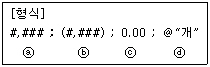
- 양수
- 0
- 음수
- 텍스트
(정답률: 52%)
25. 다음 그림과 같은 이중 축 차트에 관한 설명으로 옳지 않은 것은?
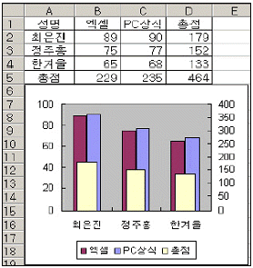
- 데이터 방향은 행 기준으로 선택되었다.
- 이중 축 차트는 특정 계열의 값이 다른 계열과 크게 차이나는 경우에 주로 사용한다.
- 총점 계열이 이중 차트로 표시된 상태이다.
- 이중 축 값에서 축 서식을 선택하여 최소값 : 0, 최대값 : 400으로 지정한 상태이다.
(정답률: 39%)
26. 일반 텍스트 문서(*.txt)로 작성된 데이터 파일을 엑셀에서 읽어 들이려고 한다. 데이터의 열과 열 사이는 <탭>키로 구분되어 있다. 다음 중 이 텍스트 문서를 엑셀 프로그램에서 읽어 들이는 방법으로 옳은 것은?
- 탭으로 구분된 텍스트 문서는 엑셀 프로그램이 인식할 수 없으므로 메모장과 같은 텍스트 편집 프로그램에서 열과 열 사이에 콤마(,)를 넣어준 후에 파일을 연다.
- 열과 열 사이에 탭이 설정되어 있더라도 각 열의 줄에 맞추어져 있어야 하므로, 줄을 맞춘 후에 파일을 연다.
- 파일 열기에서 파일 형식을 텍스트로 설정하기만 하면 구분 기호로 자동으로 인식하여 데이터가 엑셀로 불려진다.
- 파일 열기에서 파일 형식을 텍스트로 설정하면 문자열 마법사가 나타나므로 이를 이용한다.
(정답률: 30%)
27. 아래 그림은 매크로 기록 화면이다. 다음 중 매크로를 실행할 수 있는 방법으로 옳지 않은 것은?
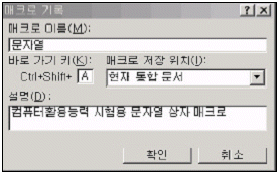
- <Ctrl>+<F8>키를 눌러 문자열 매크로를 선택한 후 [실행] 버튼을 클릭한다.
- <Ctrl> + <Shift> + <A>키를 누른다.
- [도구] 메뉴의 [매크로]-[매크로]를 클릭하여 문자열 매크로를 선택한 후 [실행] 버튼을 클릭한다.
- [Visual Basic] 도구모음이 [매크로 실행] 버튼을 클릭하여 문자열 매크로를 선택한 후 [실행] 버튼을 클릭한다.
(정답률: 43%)
28. [A3]셀에 입력된 수식은 =SUM($A1:$A2)이다. 이 셀을 [B3]셀에 복사하였을 때 [B3]셀에 표시되는 값은?
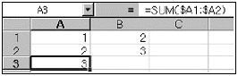
- 2
- 3
- 4
- 5
(정답률: 43%)
29. [D2]셀의 결과 값을 통해 알 수 있는 함수식으로 옳은 것은?
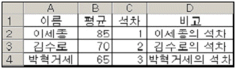
- =A2 “&” 의 석차
- =“A2” “&” “의 석차”
- =“A2” & “의 석차”
- =A2 & “의 석차”
(정답률: 43%)
30. 아래 워크시트에서 [A]열에 [셀]-[서식]-[표기형식]-[사용자 정의]형식을 이용하여 [C]열과 같이 나타내고자 한다. 다음 중 입력하여야 할 사용자 정의 형식으로 옳은 것은?
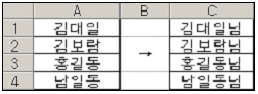
- #님
- @‘님’
- #‘‘님’
- @님
(정답률: 40%)
31. 아래에 주어진 피벗 테이블의 레이아웃에서 페이지, 행, 열, 데이터의 각 항목에 대한 설정이 옳게 나열된 것은?
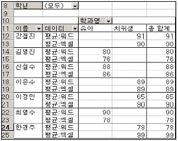
- 페이지 : 학과명, 행 : 워드, 엑셀, 열 : 이름, 데이터 : 학년
- 페이지 : 학년, 행 : 이름, 열 : 학과명, 데이터 : 워드, 엑셀
- 페이지 : 학년, 행 : 학과명, 열 : 이름, 데이터 : 워드, 엑셀
- 페이지 : 학년, 행 : 워드, 엑셀, 열 : 이름, 데이터 : 학과명
(정답률: 41%)
32. 아래의 시트에서 오른쪽 방향으로 화면을 이동했을 때에도 [A]열의 이름영역이 항상 보이도록 하기 위한 기능으로 옳은 것은?
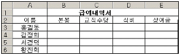
- [창]-[나누기]
- [보기]-[확대/축소]
- [창]-[틀 고정]
- [보기]-[전체화면]
(정답률: 73%)
33. [A3]셀에 오늘 날짜를 표시하려고 한다. 함수식으로 옳은 것은?
- =DAY( )
- =DAYS360()
- =TODAY( )
- =DATE( )
(정답률: 71%)
34. 다음 중 [A1:C3] 영역과 같이 조건을 작성한 후 고급필터를 실행 했을 때, 추출되는 데이터에 관한 설명으로 옳은 것은?
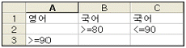
- 영어 점수가 90점 이상이고, 국어 점수가 80점 이상이거나 90점 이하인 데이터
- 영어 점수가 90점 이상이거나, 국어 점수가 80점 이상이고 90점 이하인 데이터
- 영어 점수가 90점 이상이면서, 국어 점수가 80점 이상이고 90점 이하인 데이터
- 영어 점수가 90점 이상이거나, 국어 점수가 80점 이상이거나 90점 이하인 데이터
(정답률: 62%)
35. 상품가격이 3,000원인 상품에 대하여 아래 수식을 이용하여 계산된 판매금액이 4,000,000원이었다. 다음 중 판매금액이 4,500,000원이 되기 위해서는 판매수량이 얼마가 되어야 하는지 알고 싶을 때 사용하는 기능으로 옳은 것은?
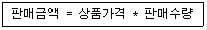
- 목표값 찾기
- 피벗 테이블
- 시나리오
- 레코드 관리
(정답률: 72%)
36. 다음 차트에서 설정되지 않은 옵션은?
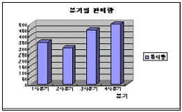
- 범례
- 차트 제목
- 축 제목
- 데이터 이름표
(정답률: 38%)
37. 다음 중 데이터의 그룹 및 윤곽 설정 기능에 대한 설명으로 옳지 않은 것은?
- 열이나 행을 선택한 후 메뉴에서 [데이터]-[그룹 및 윤곽 설정]-[그룹]을 선택하면 그룹화 된다.
- 모든 정보를 표시하려면 윤곽 기호에서 가장 낮은 수준을 클릭한다.
- 그룹 및 윤곽설정을 하려면 그룹으로 묶고자 하는 데이터를 기준으로 먼저 정렬해 주는 것이 좋다.
- 윤곽 기호 중 “+” 표시는 그룹이 확장되었을 때 나타나고, “-” 표시는 그룹이 축소되었을 때 나타난다.
(정답률: 31%)
38. 다음 중 매크로에 대한 설명으로 옳지 않은 것은?
- 매크로는 자주 사용하는 여러 작업을 기록할 수 있다.
- 매크로 기록 시 바로가기 키를 입력해주면 바로가기 키를 이용하여 매크로 수행이 가능하다.
- 매크로 메뉴의 한 단계씩 코드 실행 단추는 매크로를 디버깅하는데 사용된다.
- 매크로 작성에 사용되는 프로그래밍 언어는 Visual C++이다.
(정답률: 49%)
39. 다음 중 작업에 필요한 여러 개의 통합 문서가 열려 있을 때 문서의 정렬 방식으로 옳지 않은 것은?
- 바둑판식
- 계단식
- 채우기식
- 가로
(정답률: 43%)
40. 다음 중 아래 수식에 나타난 [출석부.xls]의 의미로 옳은 것은?
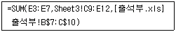
- 출석부.xls 파일
- 출석부.xls 시트
- 출석부.xls 값을 가지는 셀
- 출석부.xls 항목
(정답률: 38%)